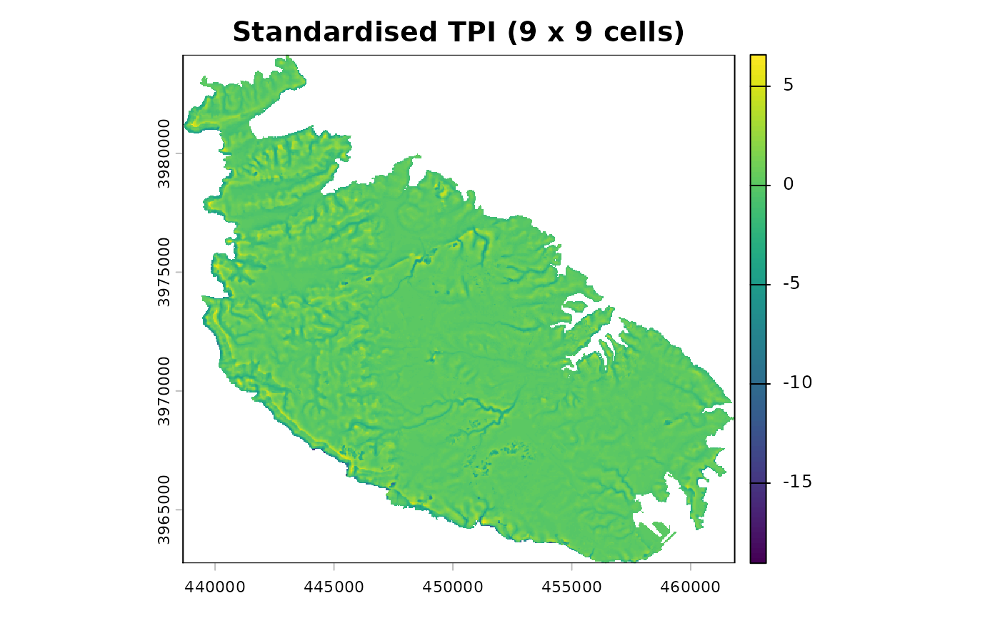
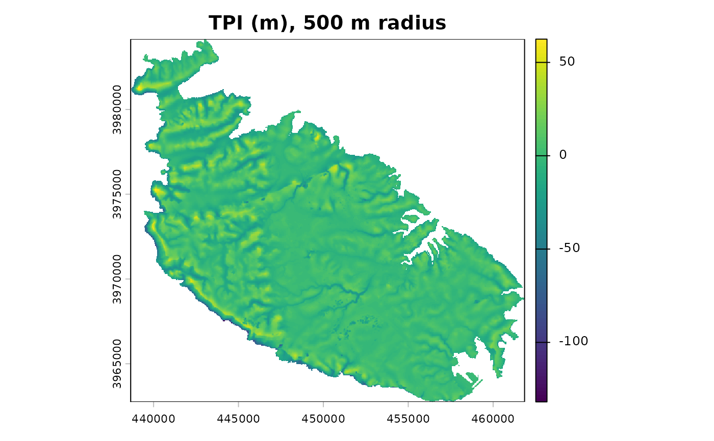

Topographic Position Index
tpi.RdCalculates the Topographic Position Index (TPI), that is the difference
between the elevation of each cell and the mean elevation of its
neighbourhood (Guisan et al. 1999; Weiss 2001), optionally standardised.
This is the quantity on which landform bases its
classifications; it is exported so that the TPI surfaces can be inspected,
mapped, or used in other analyses.
Arguments
- x
A single-layer
SpatRaster(or aRasterLayer, which is converted internally) representing elevation.- scale
Size of the neighbourhood. If
units = "cells"(default), the width of the moving window in cells (an odd integer >= 3; e.g.3gives a 3 x 3 window). Ifunits = "map", the radius of the neighbourhood (or the half-width of the window, forshape = "square") in map units; for longitude/latitude rasters, map units are metres.- units
Either
"cells"(default) or"map"; seescale.- shape
Shape of the neighbourhood:
"square"(default),"circle", or"annulus"(a ring; requiresinner).- inner
Inner radius of the annulus, in the same units as
scale(forunits = "cells", a radius in cells). Ignored unlessshape = "annulus".- centre
Logical. Should the focal cell be included when computing the neighbourhood mean (and standard deviation)? Default
FALSE, in line with the definition of TPI as the difference between a cell and its surroundings. See Details.- std
Standardisation:
"global"(default),"local", or"none". See Details.
Details
Standardisation. With std = "global" the TPI is converted to
z-scores using the mean and standard deviation of the TPI over the whole
raster, so that values express the number of standard deviations from the
grid mean. This is the standardisation used by Weiss (2001) and in Jenness's
TPI extension (Jenness 2006), to which the classification thresholds in
landform refer.
With std = "local" the TPI of each cell is divided by the standard
deviation of elevation within its own neighbourhood. This is the
"deviation from mean elevation" (DEV) of Wilson and Gallant (2000), which
De Reu et al. (2013) found preferable in landscapes whose relief varies
strongly from place to place. Be aware that, in nearly flat areas, the local
standard deviation is very small, so that minimal elevation noise is
magnified into large standardised values; on perfectly flat areas the
local standardisation is undefined (NA). This was the (only)
standardisation used by landform up to version 0.2.
With std = "none" the raw TPI (in elevation units) is returned.
Focal cell. With std = "global", including or excluding
the focal cell rescales every TPI value by the same constant (n-1)/n, which
cancels out in the z-scores; the choice therefore only affects cells close
to the raster edges or to NA cells, where the neighbourhood is
incomplete. It matters with std = "local" and std = "none".
Edges. Cells beyond the raster boundary, and NA cells, are
ignored when averaging; TPI near edges is therefore computed from an
incomplete neighbourhood.
Map units for longitude/latitude rasters. Cell sizes in metres are approximated at the latitude of the centre of the raster; over large latitudinal extents the neighbourhood is therefore only approximately constant in ground size.
References
De Reu, J., Bourgeois, J., Bats, M., Zwertvaegher, A., Gelorini, V., De Smedt, P., Chu, W., Antrop, M., De Maeyer, P., Finke, P., Van Meirvenne, M., Verniers, J. and Crombé, P. (2013). Application of the topographic position index to heterogeneous landscapes. Geomorphology, 186, 39-49.
Guisan, A., Weiss, S. B. and Weiss, A. D. (1999). GLM versus CCA spatial modeling of plant species distribution. Plant Ecology, 143, 107-122.
Jenness, J. (2006). Topographic Position Index (tpi_jen.avx) extension for ArcView 3.x, v. 1.2. Jenness Enterprises.
Weiss, A. (2001). Topographic Position and Landforms Analysis. Poster presentation, ESRI User Conference, San Diego, CA.
Wilson, J. P. and Gallant, J. C. (eds) (2000). Terrain Analysis: Principles and Applications. Wiley, New York.
Examples
dem <- malta_dtm()
# standardised TPI, 9 x 9 cell window (360 m at 40 m resolution)
t9 <- tpi(dem, scale = 9)
terra::plot(t9, main = "Standardised TPI (9 x 9 cells)")

# raw TPI over a 500 m circular neighbourhood
t500 <- tpi(dem, scale = 500, units = "map", shape = "circle", std = "none")
terra::plot(t500, main = "TPI (m), 500 m radius")
